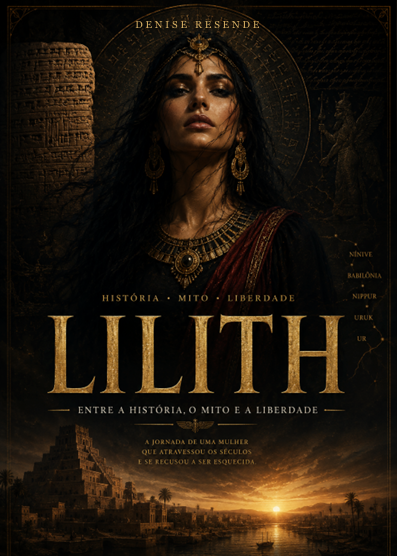

História
Contextos, fontes e narrativas que ajudam a compreender a formação de símbolos através do tempo.
SACERDOTISA • AUTORA • PESQUISADORA
Alta Magia Goética
Entre história, simbolismo e investigação, uma jornada por narrativas que atravessam séculos.
História, mito e liberdade em uma pesquisa que atravessa símbolos, narrativas e tempo.
SOBRE DENISE
Denise Resende desenvolve um trabalho autoral voltado à pesquisa, à escrita e ao estudo de tradições, símbolos e narrativas históricas.
Seu trabalho aproxima documentação, mito e reflexão, convidando o leitor a observar diferentes camadas de uma mesma história.
“Toda narrativa guarda mais de uma camada.”
TRAJETÓRIA
Uma trajetória dedicada ao estudo de tradições, símbolos e narrativas ligadas à espiritualidade e à Alta Magia Goética.
A prática ocupa lugar central em seu trabalho e fundamenta a proposta apresentada em seu curso de Alta Magia Goética.
Transmissão do conhecimento com ênfase em clareza, ética, responsabilidade e preservação da tradição.
Pesquisa e escrita também se materializam em obras como Lilith — Entre a História, o Mito e a Liberdade.
UNIVERSO DE PESQUISA
Contextos, fontes e narrativas que ajudam a compreender a formação de símbolos através do tempo.
Leituras sobre tradições e personagens que atravessaram diferentes culturas e épocas.
Investigação das imagens, significados e interpretações presentes em tradições e registros históricos.

OBRA EM DESTAQUE
Uma jornada de pesquisa sobre uma das figuras mais enigmáticas da tradição, percorrendo história, mito, símbolos e diferentes interpretações construídas ao longo do tempo.
O botão será ativado assim que o link definitivo de checkout for inserido.
UMA OBRA, MUITAS CAMADAS
Uma experiência editorial para quem deseja ir além das versões simplificadas e percorrer as camadas históricas, simbólicas e culturais de Lilith.
FORMAÇÃO
Uma formação apresentada para quem busca estudar a Goétia Salomônica com profundidade, tradição, ética e responsabilidade.
Para quem deseja ir além de conteúdos superficiais e compreender a tradição com maior profundidade.
Para quem valoriza orientação séria, responsabilidade e respeito à espiritualidade.
Para interessados em conhecer fundamentos, referências e o contexto da Goétia Salomônica.
Para quem procura uma jornada organizada de estudo e desenvolvimento dentro da proposta do curso.
CURSOS
Conhecimento, tradição, prática e responsabilidade.
CONTATO
Acompanhe Denise no Instagram ou fale diretamente pelo WhatsApp.